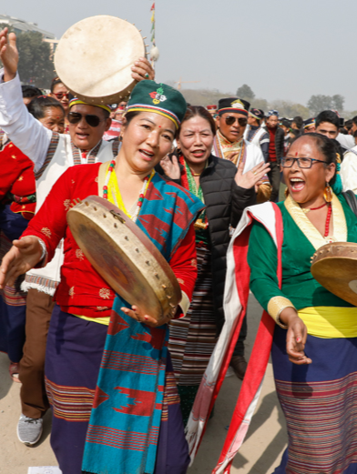

Types of Hat
There are some sample pictures of Nepali Traditional hats

Dhaka Topi
Bhadgaunle Topi

Dhaka ko Topi literately means a "headgear made of Dhaka cloth", a fine cotton cloth.
The Dhaka topi was a part of the Nepalese national dress, and a symbol of Nepalese nationality.
For the past few years, January 1 is unofficially celebrated as the Nepali Topi Diwas (Nepali Cap Day). Every year, most Nepalis are seen coming out flaunting either ‘Dhaka’ topi or ‘Bhadgaule’ topi. Here are some Famous Topi in Nepal.
It became popular during the reign of King Mahendra, who ruled between 1955 and 1972, and made wearing a Dhaka topi mandatory for official photographs for passports and documents.[5] Dhaka Topis are given away as gifts during Dashain and Tihar festivals
A Bhadgaunle Topi (Nepali: भादगाउँले टोपी, romanized: Bhādagāũle Ṭopī) or Kalo Topi (Nepali: कालो टोपी) is a type of hat worn by Nepalis and Indian Gorkhas.[1] The hat has been adopted as a part of Nepali national dress for men, as an alternative to the Palpali Dhaka topi.
Shyamu or shyamung is a typically tall, cylindrical hat worn by both Sherpa men and women, but majorly by women. The brim of this Nepali topi is made out of wool and is usually parted facing upwards or the crown of the hat
There are some sample pictures of Nepali Traditional hats
I love this hat. It shows the culture of my country Nepal. Proud to be Nepali
The product is too good. This brand topi advantage is that, it's cost is quiet less with comprasion with it's quality.